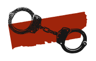

Entre maio de 2022 e julho de 2023, nossa equipe de 32 jornalistas e profissionais de mídia de 12 países se aventurou em cantos raramente explorados da Amazônia para entender seu ecossistema criminoso.
Passamos um ano investigando esse intrincado cenário e reunindo informações, relatos e dados sobre as forças que levam os protagonistas do submundo amazônico a se envolverem em atividades ilícitas que têm um impacto devastador nas comunidades e no meio ambiente de toda a região.
O submundo da Amazônia consiste em um banco de dados que permitiu mapear a presença de grupos armados nas fronteiras amazônicas dos países e uma série de relatórios aprofundados sobre vários aspectos do crime organizado da região, muitos dos quais tiveram pouca ou nenhuma cobertura da mídia.
PRESENÇA DE CRIME ORGANIZADO E GRUPOS ARMADOS
Para construir esse banco de dados, consultamos fontes primárias e documentos em todos os municípios fronteiriços amazônicos do Brasil, Colômbia, Venezuela, Peru, Equador e Bolívia.